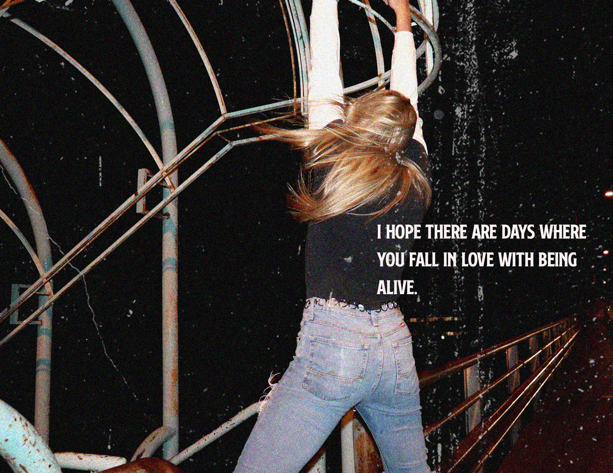
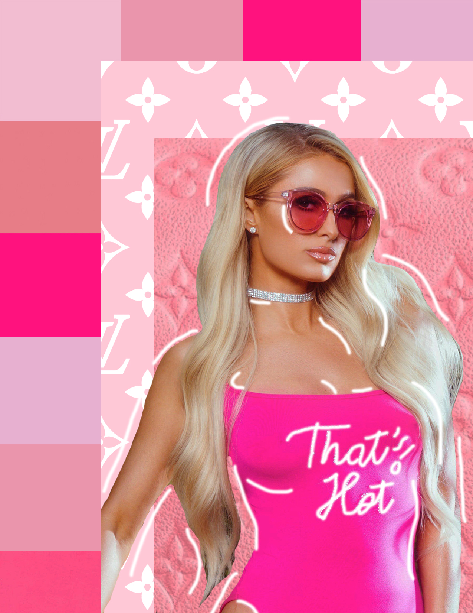
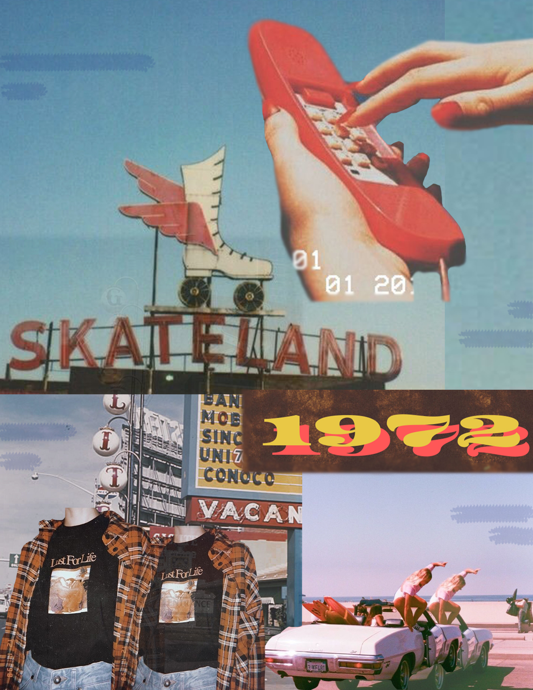

I am currently a sophmore in college. I became interested in media arts when I started doing yearbook in highschool. I fell in love with photography, design and
technology. I started doing photography on the side along with school and work and began to wonder where else I could take this. I decided to go to the University
of Montana because I was really excited to be in their media arts program. I am so happy that I am in this program, and I feel so lucky to take classes where I really
love the material. I am so excited to see where this major takes me!
Here is a picture I made for one of my classes. The girl in the picture is me!
A photo I took of my friend and then edited.

Two composites I created for class.
